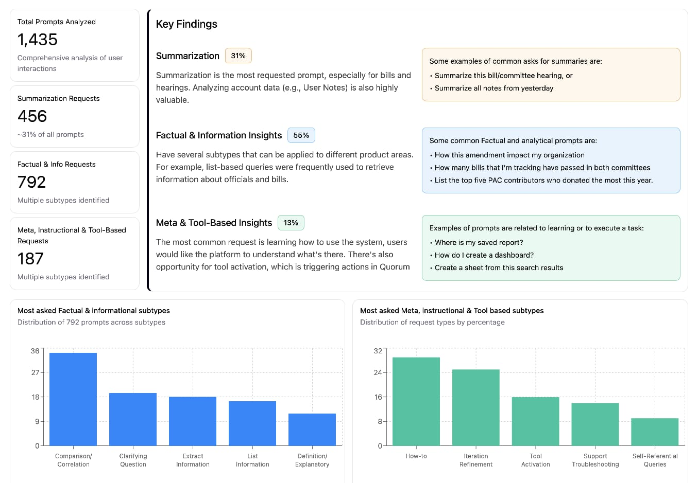
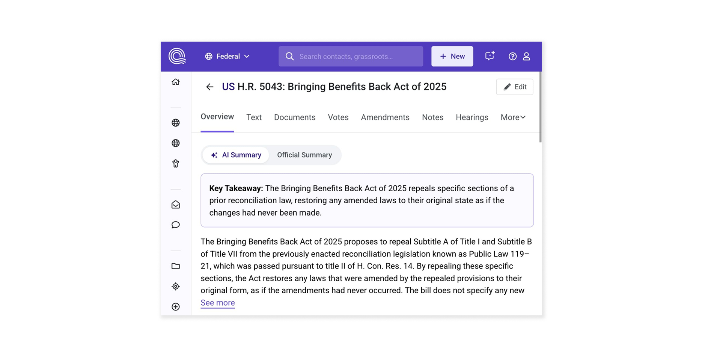
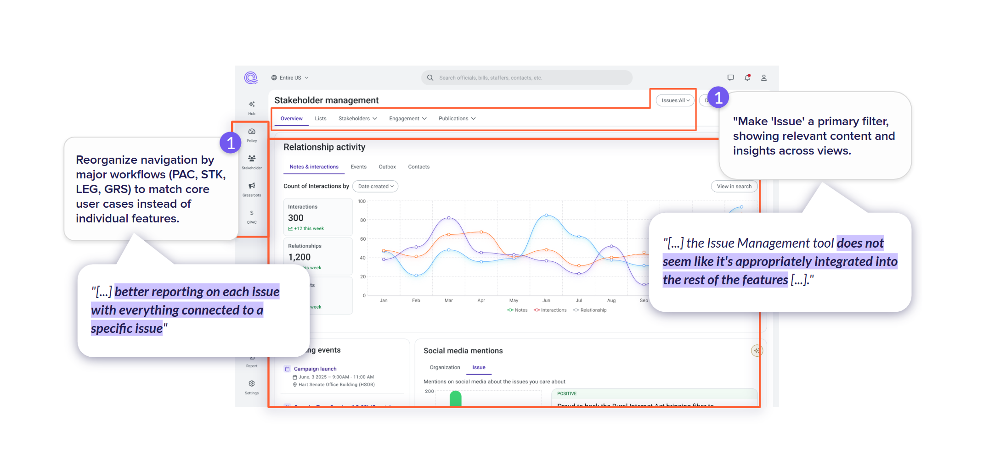

When AI became a strategic focus at Quorum, I partnered with the PM and Designer from AI team for the beta launch of the AI chat featre. I led early research on prompts and UX. As scope expanded, I facilitated design discussions with the Product Director to reimagine interactions and define a long-term cross-product AI strategy.
My Role
Collective Learning
It became clear we needed to shift both company mindset toward becoming an AI-driven organization and keep our team aligned with rapid tech evolution. Our design team quickly led the way, becoming one of the first to deliver broader value by actively leveraging AI capabilities.
As Product Design Manager, I drove initiatives through benchmarking and hands-on experimentation with AI tools, bringing the entire team into the transformation. I guided designers in exploring how patterns such as copilots and natural language interactions could redefine both interfaces and internal processes.
Learning Approach
- Team Benchmarking: I led a collaborative research initiative on AI tools and trends, analyzing products like GitHub Copilot, Augment, and Lovable.
- Hands-on Experimentation: Team members directly experienced AI tools to understand capabilities, some of the team's initiatives later became wider initiatives across the company.
- Pattern Recognition: Identified common AI interaction patterns and their implications, analyzing use cases for these patterns and how they could be applied to our product
Evaluating a beta AI product
As Quorum began rolling out AI features, I dug into prompts and adoption patterns to spot where AI could truly remove friction and streamline workflows rather than just layering on 'intelligent' features. By combining insights from our annual usability survey with usage analytics, I uncovered what users were really asking for and turned these early signals into clear opportunities for improvement

General paradigms to consider for AI design
- Redesigning features with AI raised critical questions about the paradigm shift and its impact on our solutions.
- Every new technology faces barriers to adoption, from personal preferences to broader issues of trust.
- Embedding small, contextual AI “pills” in the interface proved more valuable, and drove seamless adoption than forcing users into a chat experience.

"The AI review right at the top of the page is the most useful to me. I can get right to it and decide if I care or not"
"
Vision and Documentation
Since the product team struggled to have a holistic view of what an AI-powered Quorum interface could look like, Product and design team partnered up to create a vision prototype and to document key AI design patterns for Quorum.
Because the product team lacked a clear picture of what an AI-powered Quorum interface could be, product and design partnered to create a vision prototype and document key AI design patterns. Leading this future-focused effort, I gradually brought all the designers on my team into the process. The final delivery, a complete product overhaul prototype, was the result of diverse perspectives coming together, and it became a shared reference point for product, engineering, and leadership.
As our AI explorations evolved, The challenge wasn't just about adding 'intelligent' features, it was about fundamentally rethinking how we approach product design in an AI-augmented world.
Identifying the right UX patterns
We mapped where AI could truly add value—pinpointing capabilities that genuinely improved the way people worked. Instead of introducing unnecessary complexity, our focus was on reducing friction and removing barriers that slowed users down. Most importantly, we designed AI to seamlessly integrate into existing workflows, enhancing familiar processes rather than forcing people to change the way they already worked.
Documentation Deliverables
- Vision Prototype: Interactive mockup showing AI-augmented workflows
- Design Patterns: Documented common AI interaction patterns and best practices
- User Journey Maps: Visualized how AI could enhance specific user workflows
Examples of the vision prototype

